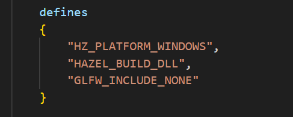

笔记8 GLAD和OpenGL
细节的问题后面我们再慢慢补，先把流程具体描述一下。
首先就是去网站上下载对应的教程的glad的源码。
然后编写更改对应的premake文件。
引进对应的的项目，然后Hazel链接等等，和前面步骤差不多，也就不多赘述了，可以参照前面的premake看glad。
之后就是在windowswindow初始化的时候，顺便初始化glad，为其创建上下文，之类的操作。
（之后还有对这个步骤的优化，后面在说）
然后再提到一个问题就是Glad和glfw的头文件先后包含顺序。
一般的是我们先包含glad，然后在引入glfw。
解释如下
GLAD 是 OpenGL 函数加载器：
glad用于加载 OpenGL 的函数指针，它在包含glfw之前初始化 OpenGL 函数指针，以确保在调用 OpenGL 函数时已经正确加载了它们。GLFW 依赖 GLAD 的加载：
glfw只是一个窗口管理库，它在创建 OpenGL 上下文时依赖 OpenGL 函数。如果没有先通过glad加载函数，可能会出现未定义的行为，导致程序崩溃或错误。
然后也是遇到了重复包含的报错。于是我们在glfw文件中找到包含的文件（与glad发生冲突的文件）。
严重性 代码 说明 项目 文件 行 禁止显示状态 详细信息
错误 C1189 #error: OpenGL header already included, remove this include, glad already provides it Hazel C:\Users\86182\Desktop\openGL\Hazel_Engine\Hazel\Hazel\vendor\Glad\include\glad\glad.h 27
然后我们就选择在premake的Hazel项目中加入了这个宏定义。
如果没有
GLFW_INCLUDE_NONE，glfw3.h可能会包含 OpenGL 相关头文件（如<GL/gl.h>），这会和其他 OpenGL 函数加载库（如glad或GLEW）冲突。使用GLFW_INCLUDE_NONE可以避免这种冲突，确保由glad来加载 OpenGL 函数。